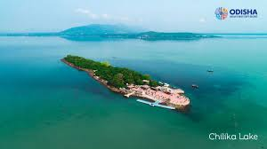

Chilika Lake

History
Chilika Lake is Asia’s largest brackish water lagoon, spread over the Puri, Khurda, and Ganjam districts of Odisha. It is a hotspot for biodiversity and hosts a large number of migratory birds during the winter season, making it a bird watcher’s paradise.
About
Chilika Lake is renowned for its natural beauty and rich biodiversity. It is home to numerous species of fish, birds, and other wildlife. The lake is also famous for the Irrawaddy dolphins that can be spotted in its waters. Visitors can enjoy boat rides and explore the various islands within the lake.
Maps Location
Chilika Lake is located along the eastern coast of India, primarily in the state of Odisha. The lake is accessible from various points, with the town of Satapada being one of the main entry points for tourists. The nearest airport is in Bhubaneswar, about 100 kilometers away.